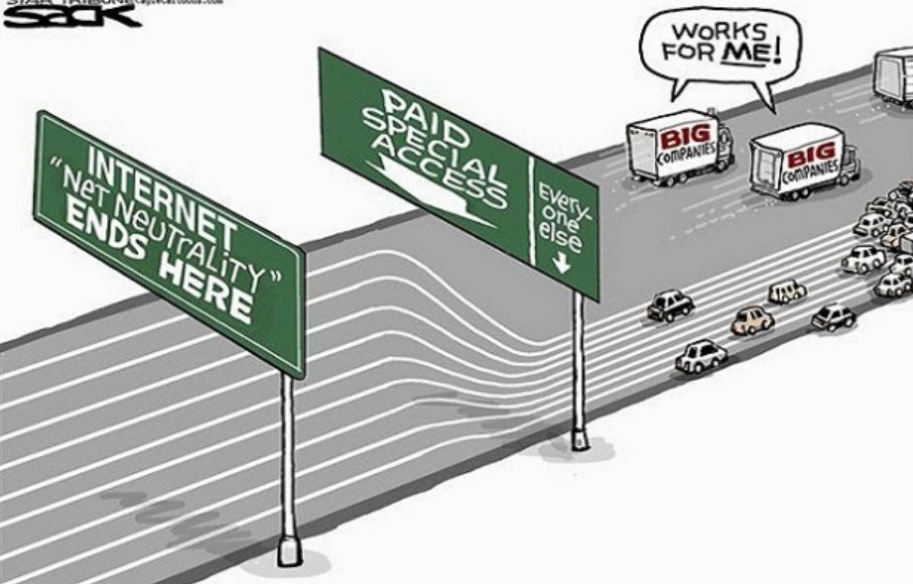
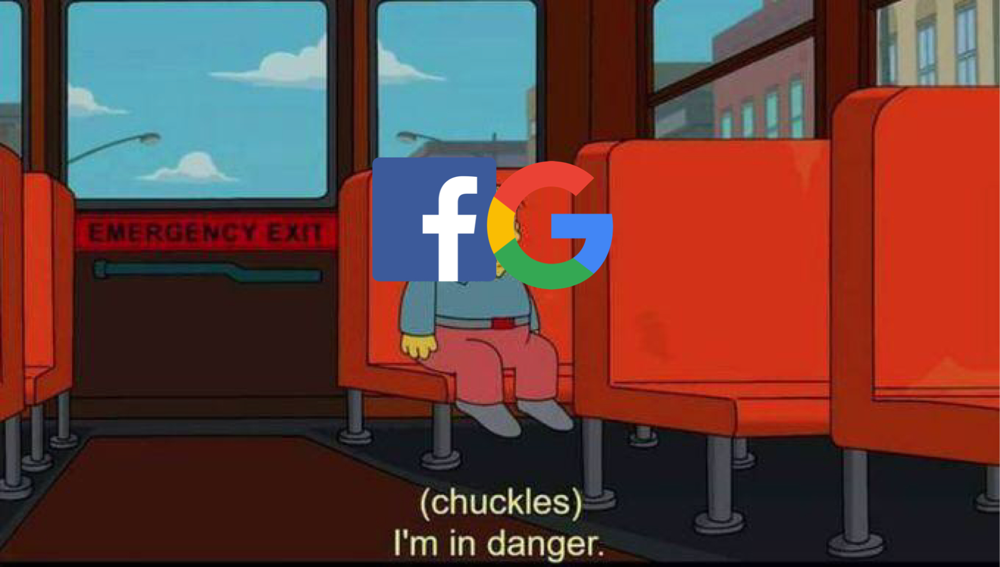

There is a lot of difference in the way different people tend to perceive the world. Among these thinkers, these are my thoughts on Vannevar Bush’s As We May Think (1945) and Tim Burners-Lee’s Long Live The Web> (2010). These writings were written almost a century apart, yet they share some cunning similarities.
In Bush’s essay, he talks about a device that can be used to index and compress memory and be carried around. This writing was published a few years before the release of the first computer, and it forms an integral example that shows the rate of development of technology in our society. He talks about several devices and concepts, many of which are available to us as a household item now. For example, he talks about a camera that can be accessed through a click of a button, and now, we take pictures with our own phones almost every day. If we follow this general arc, maybe in fifty years, machines that seem futuristic now, like one of those extremely intelligent AIs that run completely on their own and collect information on their own, too will be a common household item.
 Burners-Lee talks more about the rights that we have as internet users, and, like democracy, he says it needs to defended. One of the important points that stood out to me was, “A related danger is that one social-networking site—or one search engine or one browser—gets so big that it becomes a monopoly, which tends to limit innovation.” We see this happening with so many large tech companies like Google and Facebook buying up all their competitors. In a utopian world, everyone’s data would be perfectly safe, but in the regular world, the cost of this monopoly on regular people like you and me is all our data being monitored, sold to and shared with third parties.